Το παρόν είναι ένα Έγγραφο Περιγραφής της Σχεδίασης λογισμικού για το πρόβλημα της δανειστικής βιβλιοθήκης όπως αυτό περιγράφεται στο βιβλίο "Μ. Γιακουμάκης και Ν. Διαμαντίδης, Τεχνολογία Λογισμικού, Σταμούλης, 2009"
Ορισμένες από τις παρακάτω ενότητες έχουν διδακτικό χαρακτήρα και επεξηγούν επιλογές σχεδίασης με μεγαλύτερη ανάλυση από ότι θα περίμενε κάποιος από ένα σχέδιο λογισμικού. Επίσης κάποιες αλλαγές σε επιλογές σχεδίασης σε σχέση με το βιβλίο περιγράφονται εδώ
Η οργάνωση του συστήματος δανεισμού γίνεται σε τέσσερα στρώματα.
[Στο σχήμα δεν παρουσιάζεται το στρώμα δεδομένων]
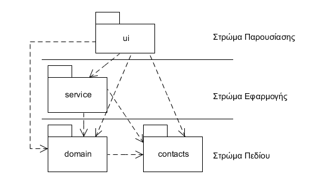
[Συνοπτική περιγραφή κάθε στρώματος.]
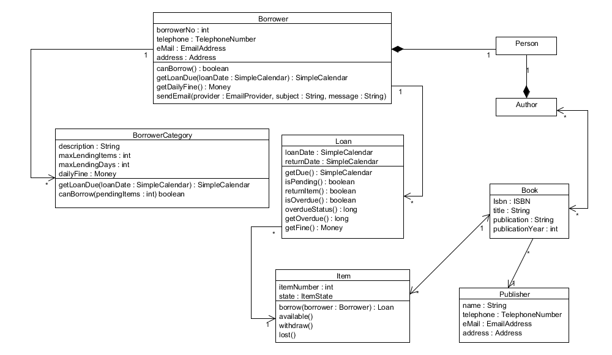
[_Παραδείγματα διαγραμμάτων ακολουθίας για τις συμπεριφορές βλέπε το παράδειγμα 8-6 στη σελ. 452 και το παράδειγμα 8-8 στη σελ. 460 _]
Οι κλάσεις υπηρεσιών στο πακέτο service έχει περισσότερο αξία για το λογισμικό που δεν εκθέτει τις υπηρεσίες του μέσω κάποιας διεπαφής χρήστη αλλά με άλλους τρόπους.
[Δεν είναι βέβαια υποχρεωτικό να υπάρχει. Οι υπηρεσίες του δανεισμού περιγράφονται σε διάφορα σημεία στο βιβλίο. Η υπηρεσία της ενημέρωσης για καθυστέρηση που συμπληρώνει την εικόνα και περιγράφεται εδώ.]
Λειτουργίες του συστήματος δανεισμού μπορούν να δημοσιοποιηθούν μέσω υπηρεσίας ιστού (web service). Οι βασικές λειτουργίες του δανεισμού και επιστροφής αντιτύπου δημοσιεύονται ως λειτουργίες μίας υπηρεσίας ιστού. Η υπηρεσία είναι διαθέσιμη στη διεύθυνση http://localhost:9877/library με την προϋπόθεση βέβαια ότι η θύρα 9877 είναι ελεύθερη. Το WSDL έγγραφο είναι διαθέσιμο στη διεύθυνση http://localhost:9877/library?wsdl. Εκτός από τις δύο λειτουργίες του δανεισμού και της επιστροφής αντιτύπου υπάρχει και μία τρίτη λειτουργία η οποία επιστρέφει πληροφορίες για τα όλα τα αντίτυπα της βιβλιοθήκης και την κατάστασή τους. Ο σκοπός αυτής της λειτουργίας είναι να μας δείξει πώς μεταφέρονται σύνθετα δεδομένα μεταξύ των υπηρεσιών. Ποιο ρεαλιστικό βέβαια θα ήταν η υπηρεσία να δέχεται κριτήρια αναζήτησης και να επιστρέφει αποτελέσματα που ικανοποιούν τα κριτήρια αναζήτησης παρά να επιστρέφει δεδομένα για όλα τα αντίτυπα.
Η υλοποίηση της υπηρεσίας βρίσκεται στο πακέτο com.mgiandia.library.service.ws. Χρησιμοποιούνται τα API JAX-B για τη μετατροπή Java κλάσεων σε τύπους που χρησιμοποιούνται σε SOAP μηνύματα και JAX-WS για τη δημοσίευση Java διεπαφών και κλάσεων ως λειτουργίες υπηρεσιών. Και τα δύο API μας παρέχουν annotations για την αυτόματη μετατροπή κλάσεων σε τύπους της XML και αυτόματης δημιουργίας WSDL εγγράφων. Έτσι με το εργαλείο wsgen το οποίο παρέχει το JDK 6 μπορεί να γίνει η δημιουργία του WSDL εγγράφου. Αντίστροφα, αν θελήσουμε να κατασκευάσουμε κάποιο πελάτη της υπηρεσίας θα χρησιμοποιήσουμε το εργαλείο wsimport το οποίο δέχεται ως είσοδο ένα WSDL έγγραφο και παράγει των κώδικα του πελάτη για την επικοινωνία με την υπηρεσία όπως και των Java κλάσεων που προκύπτουν από τους τύπους που δηλώνονται στο WSDL έγγραφο. Το σημαντικότερο ίσως στοιχείο πέραν της ευκολίας που παρέχουν τα εργαλεία που διευκολύνουν τη δημοσίευση και χρήση των υπηρεσιών ιστού είναι η σχέση που έχουν οι τύποι που χρησιμοποιούνται σε μία υπηρεσία ιστού και η σχέση που έχουν με τις κλάσης του πεδίου.
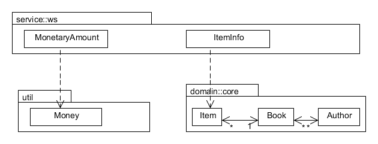
Η σχέση αυτή παρουσιάζεται στο παραπάνω σχήμα. Οι κλάσεις MonetaryAmount και ItemInfo χρησιμοποιούνται ως τύποι δεδομένων της υπηρεσίας. Η επιλογή αυτή έχει δύο βασικά πλεονεκτήματα:
ItemInfo ότι μπορούμε να υποκαταστήσουμε έναν πολύπλοκο γράφο αντικειμένων με ένα απλό αντικείμενο. Για παράδειγμα αντί να έχουμε τους συγγραφείς ενός βιβλίο ως ξεχωριστά αντικείμενα τους έχουμε ως μία απλή συμβολοσειρά. Αυτό με τη σειρά του κάνει εύκολα διαχειρίσιμα τα δεδομένα από τον πελάτη της υπηρεσίας και επιπλέον μειώνει το μέγεθος των SOAP μηνυμάτων που αποστέλλονται.Διαπιστώνουμε τέλος ότι όταν επιτύχουμε μία καλή σχεδίαση του λογισμικού με ευρεία χρήση των κλάσεων του πεδίου και καλά σχεδιασμένη αποθήκευση αντικειμένων μπορούμε πολύ πιο εύκολα να προβούμε σε επέκταση του λογισμικού. Ο κώδικας για την υλοποίηση της υπηρεσίας ιστού είναι σχετικά μικρός και βασίζεται στα χαμηλότερα στρώματα του λογισμικού.
Αξίζει να αναφέρουμε ότι η προσθήκη του JPA αλλάζει πολύ λίγο το υπόλοιπο λογισμικό μας. Οι αλλαγές αυτές εντοπίζονται:
Είναι ιδιαίτερα σύνηθες όταν εκτελούμε αυτόματους ελέγχους με το JUnit να μη χρησιμοποιούμε κάποιο σύστημα διαχείρισης βάσεων δεδομένων που θα χρησιμοποιηθεί στην παραγωγή αλλά μία μηχανή βάσεων δεδομένων που θα μας επιτρέψει να εκτελέσουμε γρήγορα τους ελέγχους. Η μηχανή που επιλέξαμε είναι η H2. Η μηχανή και οι απαιτούμενοι οδηγοί (drivers) διανέμονται σε ένα και μόνο jar αρχείο. Η H2 χρησιμοποιεί αρχεία του συστήματος αρχείων για να αποθηκεύει τα δεδομένα. Μπορεί να δημιουργήσει τη βάση δεδομένων και να εκτελέσει όλες τις εντολές SQL στη μνήμη του υπολογιστή για την επίτευξη ακόμα μεγαλύτερης ταχύτητας.
Για την αυτοματοποίηση των ελέγχων τρόπος εργασίας είναι ο εξής:
Η παραμετροποίηση του JPA από την οποία εξαρτάται και η δημιουργία του EntityManagerFactory βρίσκεται στο αρχείο persistence.xml στον φάκελο <ρίζα του project>/META-INF. Τα περιεχόμενά του είναι:
<persistence-unit name="library" transaction-type="RESOURCE_LOCAL">
<provider>org.hibernate.ejb.HibernatePersistence</provider>
<properties>
<property name="hibernate.show_sql" value="true"/>
<property name="hibernate.format_sql" value="true"/>
<property name="hibernate.connection.driver_class"
value="org.h2.Driver"/>
<property name="hibernate.connection.url"
value="jdbc:h2:./test"/>
<property name="hibernate.dialect"
value="org.hibernate.dialect.H2Dialect"/>
<property name="hibernate.connection.username"
value="sa"/>
<property name="hibernate.hbm2ddl.auto" value="create-drop"/>
</properties>
</persistence-unit>
Το πρώτο που δηλώνουμε στην παραμετροποίηση είναι το όνομα του persistence-unit δηλαδή της ενότητας εκείνης που αντιστοιχεί σε ένα EntityManagerFactory. Στην περίπτωσή μας το όνομα είναι "library". Οι ιδιότητες hibernate.show_sql και hibernate.format_sql αφορούν στο αν θα φαίνονται στην κονσόλα οι SQL εντολές που δημιουργεί το Hibernate κατά τη λειτουργία της εφαρμογής. Η ιδιότητα hibernate.connection.driver_class δηλώνει τον JDBC driver που θα χρησιμοποιήσει το Hibernate για να επικοινωνήσει με τη βάση δεδομένων. Σε αυτό το σημείο αν θα θέλαμε να δηλώσουμε άλλο σύστημα διαχείρισης βάσεων δεδομένων θα πρέπει να δηλώναμε τον αντίστοιχο JDBC driver και να εισάγαμε το αρχείο jar που τον περιέχει στο CLASSPATH. Η ιδιότητα hibernate.connection.url δηλώνει το URL της σύνδεσης με τη συγκεκριμένη βάση δεδομένων. Στη δική μας περίπτωση χρησιμοποιεί το αρχείο test που μάλιστα αν δεν υπάρχει δημιουργείται αυτόματα. Σε αυτό το σημείο αν θέλαμε θα μπορούσαμε να δηλώσουμε τη χρήση της μνήμης του υπολογιστή αντί του αρχείου. Η ιδιότητα hibernate.dialect δηλώνει τη διάλεκτο της SQL που θα χρησιμοποιηθεί. Κάθε σύστημα διαχείρισης βάσεων δεδομένων χρησιμοποιεί παραλλαγές της SQL. Το Hibernate γνωρίζει τις παραλλαγές αυτές και τις χρησιμοποιεί κατά την επικοινωνία με τη βάση δεδομένων.
Η ιδιότητα hibernate.connection.username δηλώνει το username με το οποίο συνδεόμαστε στη βάση δεδομένων. Επειδή δεν έχουμε δηλώσει την ιδιότητα του password αυτό θεωρείται το κενό. Η ιδιότητα hibernate.hbm2ddl.auto έχει ενδιαφέρον. Δηλώνει στο Hibernate ότι κατά τη δημιουργία του EntityManagerFactory θα πρέπει να δημιουργούν οι πίνακες, οι στήλες και οι περιορισμοί (υποχρεωτικές τιμές, πρωτεύοντα και ξένα κλειδιά) από τα JPA annotation. Με άλλα λόγια δεν χρειάζεται να τρέξουν κάποια SQL scripts για τη δημιουργία των πινάκων, γιατί αυτή την εργασία την αναλαμβάνει το Hibernate. Αυτό είναι πολύ βολικό όταν τρέχουμε αυτόματους ελέγχους αλλά προφανώς είναι καταστροφικό αν η διαδικασία της δημιουργίας των πινάκων τρέξει στο τελικό περιβάλλον παράδοσης του λογισμικού. Έτσι με την τιμή μίας και μόνο ιδιότητας έχουμε την αυτόματη δημιουργία της βάσης δεδομένων κατά την εκκίνηση των ελέγχων.
Η διεπαφή χρήστη υλοποιείται με χρήση του προτύπου Model View Presenter (MVP).
Για τη διεπαφή χρήστη χρησιμοποιούμε τη βιβλιοθήκη Swing της Java αλλά η βασική επιλογή σχεδίασης που έχουμε κάνει είναι η χρήση του προτύπου Model-View-Presenter. Οι συνιστώσες του προτύπου παρουσιάζονται στο παρακάτω σχήμα.
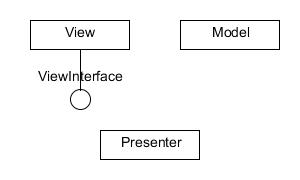
Η κλάση Model αναπαριστά αφηρημένα τις κλάσεις του μοντέλου πεδίου που είναι και το επίκεντρο της ανάπτυξης. Η κλάση Presenter αναλαμβάνει να ερμηνεύει τις εντολές του χρήστη και να μεταβιβάζει τις εντολές αυτές προς το μοντέλο πεδίου ή προς άλλες υπηρεσίες του λογισμικού. Ο Presenter μπορεί να αναλαμβάνει και μέρος ή το σύνολο του συγχρονισμού της όψης (View) και των κλάσεων του πεδίου (Model). Το παρακάτω σχήμα μας δίνει τις σχέσεις μεταξύ των συνιστωσών αυτών.
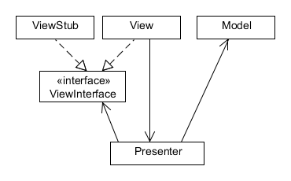
Το σημαντικό στοιχείο της δομής είναι ότι ο Presenter δεν γνωρίζει την όψη (την κλάση View). Η κλάση View είναι η πραγματική οθόνη που υλοποιείται σε Swing ή κάποια άλλη τεχνολογία διεπαφή χρήστη. Γνωρίζει μόνο τη διεπαφή ViewInterface η οποία και δηλώνει τη δημόσια διεπαφή της όψης. Ο λόγος που γίνεται αυτό είναι ότι διαχωρίζουμε τη λογική με τρόπο που να διευκολύνεται ο αυτόματος έλεγχος. Έτσι, αν θέλουμε να αυτοματοποιήσουμε τον έλεγχο του Presenter για παράδειγμα με το JUnit δεν τροφοδοτούμε τον Presenter με ένα πραγματικό αντικείμενο της κλάσης View αλλά με ένα στέλεχος αντικείμενο (κλάση ViewStub) το οποίο και υλοποιεί τη διεπαφή ViewInterface. Έτσι όταν ελέγχουμε την κλάση Presenter χρησιμοποιούμε ένα στέλεχος ενώ στον κώδικα παραγωγής τροφοδοτούμε τον Presenter με ένα πραγματικό αντικείμενο της κλάσης View. Βλέπουμε τέλος ότι η κλάση View γνωρίζει στον Presenter στον οποίο και στέλνει μηνύματα για τα γεγονότα που συμβαίνουν.
Στο παράδειγμα έχουμε κατασκευάσει τον κώδικα της διεπαφής χρήστη για τις δύο βασικές περιπτώσεις χρήσης που είναι ο δανεισμός και η επιστροφή του αντιτύπου. Καταρχήν ας δούμε τη βασική διεπαφή που χρησιμοποιείται από τις υπόλοιπες.
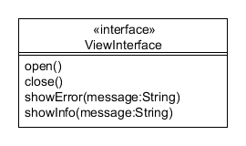
Η διεπαφή View μας παρέχει τις βασικές πράξεις μίας όψης. Το άνοιγμα και το κλείσιμο της όψης και την εμφάνιση μηνυμάτων. Είναι σημαντικό να σημειώσουμε ότι εκθέτουμε μεθόδους για την εμφάνιση μηνυμάτων. Ο λόγος είναι απλός. Τα μηνύματα θα εμφανίζονται στην οθόνη κατόπιν εντολής του Presenter και επομένως χρειαζόμαστε μία μέθοδο στην όψη. Όταν στον κώδικα του ελέγχου χρησιμοποιούμε ένα στέλεχος που υλοποιεί τη διεπαφή View, η κλήση showInfo δεν θα κάνει προφανώς, τίποτα ενώ όταν χρησιμοποιήσουμε ένα πραγματικό αντικείμενο της διεπαφής χρήστη θα εμφανίσει το μήνυμα και το πλήκτρο OK.
Ένα θέμα που πρέπει να αντιμετωπίσουμε όταν χρησιμοποιούμε το συγκεκριμένο πρότυπο είναι η δυνατότητα επικοινωνίας των διαφορετικών οθονών. Την επικοινωνία θα πρέπει φυσικά να την αναλαμβάνει ο Presenter που όμως όπως έχουμε αναφέρει δεν γνωρίζει τις πραγματικές οθόνες Swing αλλά μόνο τις διεπαφές που αυτές υλοποιούν. Η λύση που υιοθετούμε είναι η χρήση ενός μητρώου (registry οθονών. Η αρμοδιότητα του μητρώου είναι να γνωρίζει ποιο είναι το αντικείμενο που υλοποιεί κάθε όψη. Έτσι, όποιος θέλει να επικοινωνήσει με μία άλλη οθόνη ρωτά από το μητρώο να του επιστρέψει το αντικείμενο της οθόνης. Όταν εκτελούμε τον έλεγχο το αντικείμενο αυτό είναι κάποιο στέλεχος. Όταν εκτελούμε τον παραγωγικό κώδικα τότε το μητρώο μας επιστρέφει μία πραγματική οθόνη Swing (πχ JFrame). Η κλάση που υλοποιεί το μητρώο οθονών είναι η ViewRegistry. Το παρακάτω σχήμα μας δίνει μία εικόνα του μητρώου το οποίο εξυπηρετεί μόνο δύο διεπαφές οθονών.
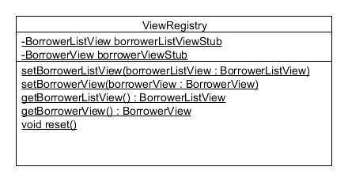
Μπορούμε να δούμε από το σχήμα ότι το μητρώο μας παρέχει αντικείμενα μέσω στατικών μεθόδων. Υπάρχει και η δυνατότητα να αποθηκεύσουμε στα στατικά πεδία της κλάσης κάποια στελέχη πριν την εκτέλεση των αυτόματων ελέγχων. Η μέθοδος reset διαγράφει όλα τα στελέχη που πιθανά έχουν εκχωρηθεί.
Μπορούμε να δούμε τη χρήση του μητρώου όταν θέλουμε να μετακινηθούμε από τον κατάλογο δανειζομένων στην επεξεργασία ενός δανειζόμενου (βλ. μέθοδο editSelected στην κλάση BorrowerListPresenter).
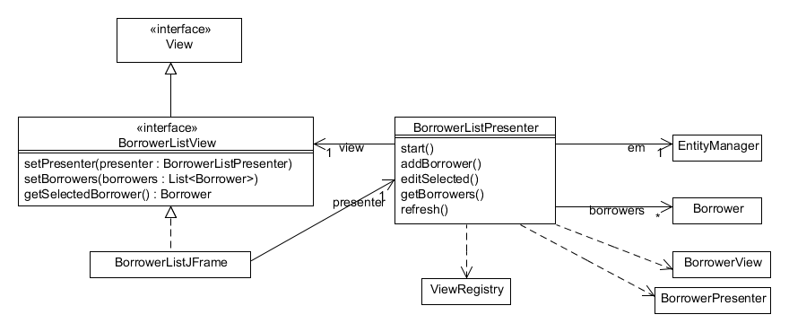
Το παραπάνω σχήμα παρουσιάζει τη δομή των κλάσεων για τη διαχείριση του καταλόγου των δανειζομένων. Ακολουθείται το πρότυπο MVP. Οι βασικές πράξεις που γίνονται φαίνονται από τις λειτουργίες του Presenter. Έτσι:
start διαβάζει τα δεδομένα από την εξωτερική πηγή δεδομένων και εκκινεί την όψηaddBorrower δημιουργεί έναν δανειζόμενο και ανοίγει την όψη BorrowerView για επεξεργασία.editSelected ανοίγει την όψη BorrowerView για επεξεργασίαgetBorrowers επιστρέφει τον κατάλογο δανειζομένωνrefresh ξαναδιαβάζει τον κατάλογο δανειζομένων από την εξωτερική πηγή δεδομένων Η λειτουργία getBorrowerList έχει την κύρια ευθύνη φόρτωσης του καταλόγου των δανειζομένων.
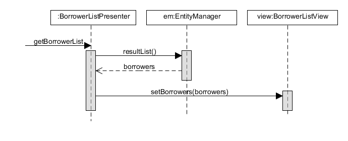
Η λειτουργία editSelected ανοίγει μία νέα οθόνη για την επεξεργασία του επιλεγμένου δανειζομένου. Από το παρακάτω σχήμα μπορούμε να δούμε και τη χρήση του μητρώου οθονών. Χρειάζεται ο BorrowerListPresenter να δημιουργήσει μία νέα οθόνη BorrowerView. Επειδή όμως έχουν ως κανόνα τον περιορισμό ότι οι presenters δεν θα πρέπει να έχουν πρόσβαση στις πραγματικές οθόνες (JFrame) βάζουμε το BorrowerListPresenter να συμβουλευτεί το μητρώο ViewRegistry για να λάβει ένα αντικείμενο τύπου BorrowerView. Κατά την εκτέλεση των ελέγχων το μητρώο ViewRegistry θα επιστρέψει ένα στέλεχος ενώ στην κανονική εκτέλεση της εφαρμογής θα επιστέψει ένα αντικείμενο τύπου BorrowerJFrame.
[Στο συγκεκριμένο διάγραμμα μπορούμε να δούμε πώς δείχνουμε την κλήση μίας στατικής μεθόδου. Το στερεότυπο metaclass μας δείχνει μία στατική κλήση.]
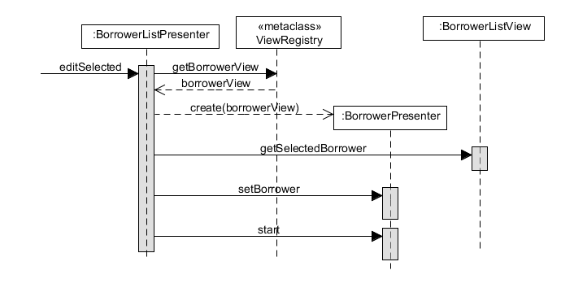
Στο παρακάτω σχήμα παρουσιάζεται η δομή του προτύπου για το δανεισμό αντιτύπου. Η κλάση LoanPresenter είναι η κλάση η οποία έχει και τη βασική συμπεριφορά. Βλέπουμε ότι για να γίνει ο δανεισμός χρειαζόμαστε τις κλάσεις Borrower, Item και Loan. Ο LoanPresenter θα πρέπει βέβαια να αναλάβει και την αποθήκευση των αντικειμένων στη βάση δεδομένων. Έτσι χρησιμοποιεί την κλάση EntityManager.
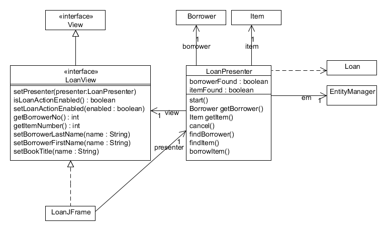
Η διεπαφή LoanView ορίζει τις μεθόδους της όψης του δανεισμού, ενώ η κλάση LoanJFrame είναι το JFrame του Swing και είναι η “πραγματική” οθόνη. Στους αυτόματους ελέγχους φυσικά δεν χρησιμοποιείται η LoanJFrame αλλά ένα στέλεχος της διεπαφής LoanView. Το σημαντικό στοιχείο που αφορά την όψη είναι ότι δεν υπάρχει καμία εξάρτηση με άλλες συνιστώσες του λογισμικού εκτός από τον Presenter. Θα μπορούσε να υπάρχει εξάρτηση με τις κλάσης του πεδίου (Borrower, Item, Loan) οπότε θα είχαμε την παραλλαγή του προτύπου Supervising Controller ενώ σύμφωνα με το σχήμα έχουμε την παραλλαγή Passive View.
Η βασική συμπεριφορά αναζήτησης δανειζομένου παρουσιάζεται στο παρακάτω σχήμα. Όμοια είναι και η αναζήτηση αντιτύπου (λειτουργία findItem).
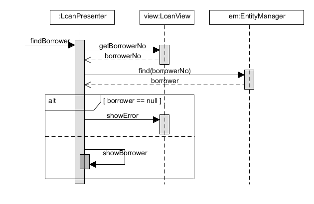
Έχοντας ως προϋπόθεση ότι έχουν βρεθεί ο δανειζόμενος και το αντίτυπο για την πραγματοποίηση του δανεισμού τότε είμαστε σε θέση να επιβεβαιώσουμε το δανεισμό με τη λειτουργία borrowItem του presenter.
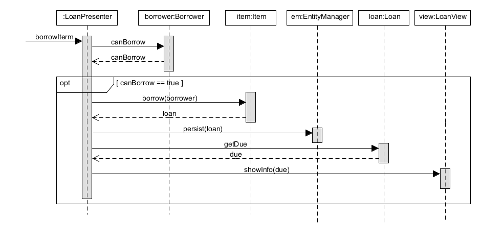
Η δομής της επιστροφής αντιτύπου παρουσιάζεται στο παρακάτω σχήμα.
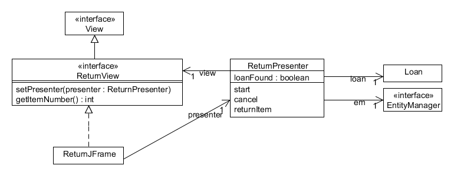
Η κλάση ReturnPresenter είναι η κλάση με τη βασική συμπεριφορά, η κλάση ReturnView είναι η διεπαφή που ορίζει της πράξης της όψης και η κλάση ReturnJFrame είναι η πραγματική οθόνη.
Η βασικότερη συμπεριφορά προκύπτει από την πραγματοποίηση της επιστροφής αντιτύπου η οποία παρουσιάζεται παρακάτω
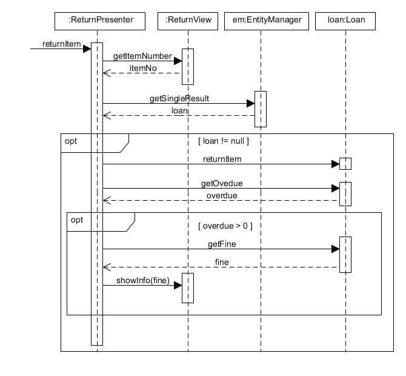
Το παρακάτω σχήμα παρουσιάζει τους πίνακες και τις σχέσεις της βάσης δεδομένων του συστήματος δανεισμού.
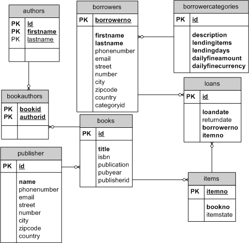
Αντί λεπτομερούς περιγραφής της δομής του μοντέλου υλοποίησης θα περιγράψουμε τη δομή των φακέλων που αποθηκεύονται τα αρχεία.
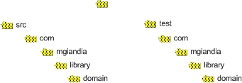
Η δομή του project έχει ως εξής:
src περιέχει όλα τα αρχεία του πηγαίου κώδικα (αρχεία .java)test περιέχει όλα τα αρχεία του πηγαίου κώδικα για τον κώδικα ελέγχου. Παρακάτω θα αναφέρουμε και τους λόγους που επιλέχθηκε ένας ξεχωριστός φάκελος για τον κώδικα ελέγχου.lib περιλαμβάνει όλες τις βιβλιοθήκες που χρησιμοποιούμε (αρχεία .jar)design περιλαμβάνει τα πηγαία αρχεία της τεκμηρίωσης της σχεδίασης του λογισμικού. Τα πηγαία αρχεία είναι αρχεία .uxf (UMLet) και αρχεία .textile (Mylyn Wiki). Τα παραγόμενα αρχεία είναι αρχεία html και αποθηκεύονται στο φάκελο doc.requirements περιλαμβάνει τα πηγαία αρχεία της τεκμηρίωσης απαιτήσεων του λογισμικού. Τα πηγαία αρχεία είναι αρχεία .uxf (UMLet) και αρχεία .textile (Mylyn Wiki). Τα παραγόμενα αρχεία είναι αρχεία html και αποθηκεύονται στο φάκελο doc.build περιλαμβάνει όλα τα μεταγλωττισμένα αρχεία (αρχεία .class)doc περιλαμβάνει την τεκμηρίωση του λογισμικού (αρχεία html). Περιλαμβάνει την τεκμηρίωση των απαιτήσεων της σχεδίασης και την τεκμηρίωση javadoc.reports περιλαμβάνει τις αναφορές που παράγονται από την εκτέλεση των αυτόματων ελέγχων, τις αναφορές κάλυψης του κώδικα και τέλος αναφορές της αυτόματης επιθεώρησης του κώδικα με το εργαλείο checkstyle.Κάτι που είναι σημαντικό είναι να εντοπίσουμε ποια είναι τα στοιχεία του έργου τα οποία θα είναι διαθέσιμα μέσω ενός συστήματος διαχείρισης εκδόσεων (βλ ενότητα 10.1.4 του βιβλίου). Η αρχή που ακολουθούμε, είναι ότι το σύστημα διαχείρισης εκδόσεων θα πρέπει να περιλαμβάνει όλα τα πηγαία αρχεία του έργου. Αυτά μπορεί να είναι αρχεία πηγαίου κώδικα, αρχεία με δεδομένα ελέγχου, αρχεία για την οικοδόμηση του συστήματος κλπ. Όλα τα παραγόμενα αρχεία δεν θα πρέπει να αποθηκεύονται στο αποθετήριο ενός συστήματος διαχείρισης εκδόσεων. Στο συγκεκριμένο έργο είμαστε σίγουροι ότι θα πρέπει να αποθηκεύονται στο αποθετήριο τα αρχεία των φακέλων src και test όπως και τα πηγαία αρχεία των φακέλων design και requirements. Είμαστε επίσης σίγουροι ότι δεν θα πρέπει να περιλαμβάνονται τα αρχεία των φακέλων build, doc και reports. Οι λόγοι είναι προφανείς: στο φάκελο build αποθηκεύονται τα αρχεία που παράγονται από τη μεταγλώττιση του πηγαίου κώδικα. Στο φάκελο doc αποθηκεύονται τα αρχεία που δημιουργούνται από την εκτέλεση του javadoc στα αρχεία του πηγαίου κώδικα. Θυμίζουμε ότι η τεκμηρίωση javadoc παράγονται από ειδικά σχόλια στα αρχεία του πηγαίου κώδικα. Τέλος τα περιεχόμενα του φακέλου reports παράγονται από την εκτέλεση των εργαλείων που αναφέραμε. Έτσι, για οποιαδήποτε αλλαγή στο έργο ενημερώνουμε τα τοπικά αντίγραφα του πηγαίου κώδικα από το αποθετήριο ενώ τα υπόλοιπα αρχεία παράγονται από την εκτέλεση εργαλείων όπως το junit, το EMMA και το checkstyle.
Αφήσαμε τελευταίο το φάκελο lib που όπως αναφέραμε περιέχει τις βιβλιοθήκες που χρειαζόμαστε. Ένα σύστημα διαχείρισης εκδόσεων είναι πολύ χρήσιμο σε απλά αρχεία κειμένου γιατί απλούστατα με βοηθά να συγκρίνουμε διαφορετικές εκδόσεις του ιδίου αρχείου. Είναι λιγότερο χρήσιμο όταν αποθηκεύουμε binary αρχεία όπως πχ αρχεία doc, ή pdf γιατί δεν είναι σε θέση να πραγματοποιήσουν συγκρίσεις στο περιεχόμενο των αρχείων. Αντίστοιχα οι βιβλιοθήκες που είναι αρχεία jar είναι binary αρχεία και έτσι είναι προφανές ότι το σύστημα διαχείρισης εκδόσεων δεν μας βοηθά στο να συγκρίνουμε διαφορετικές εκδόσεις. Ο λόγος της συμπερίληψης των βιβλιοθηκών στο σύστημα διαχείρισης εκδόσεων (όπως στο παραπάνω σχήμα) είναι να είναι διαθέσιμες οι βιβλιοθήκες σε όλους του προγραμματιστές και επιπλέον να εξαναγκάσουμε την ανάπτυξη του λογισμικού σε συγκεκριμένες εκδόσεις των βιβλιοθηκών που επιλέγουμε. Με αυτό τον τρόπο έχουμε μεγαλύτερο έλεγχο στις εξαρτήσεις του λογισμικού και προβλέψιμη συμπεριφορά του λογισμικού για τους διαφορετικούς προγραμματιστές. Τις περισσότερες φορές οι αλλαγή στην έκδοση μίας βιβλιοθήκης είναι πιο δραστική από την αλλαγή σε κάποιο αρχείο του πηγαίου κώδικα. Η απόφαση για τη συμπερίληψη των βιβλιοθηκών στο σύστημα διαχείρισης εκδόσεων εξαρτάται και από τον τρόπο οικοδόμησης του λογισμικού. Στο παράδειγμά μας χρησιμοποιούμε το ant ως εργαλείο οικοδόμησης. Εάν χρησιμοποιούσατε άλλον τρόπο οικοδόμησης πχ με το εργαλείο Maven τότε οι βιβλιοθήκες δεν θα εισάγονταν στο σύστημα διαχείρισης εκδόσεων.
Η ανάπτυξη αυτόματων ελέγχων μαζί με τον κώδικα παραγωγής είναι ένα από τα κεντρικά σημεία του παραδείγματος της υλοποίησης.
Υπάρχουν διαφορετικοί τρόποι οργάνωσης του κώδικα ελέγχου. Η δομή που επιλέχθηκε είναι η παράλληλη ιεραρχία. Στο δέντρο που ξεκινά από τον κατάλογο src αποθηκεύονται τα αρχεία του πηγαίου κώδικα παραγωγής. Στο δέντρο που ξεκινά από τον κατάλογο test ξεκινά η δομή του κώδικα ελέγχου. Με αυτό τον τρόπο έχουμε το αρχείο Borrower.java που είναι κώδικας παραγωγής στον κατάλογο src/.../domain/core. Το αρχείο BorrowerTest.java το οποίο περιέχει το αρχείο του κώδικα ελέγχου της κλάσης Borrower αποθηκεύεται στον κατάλογο test/.../domain/core. Με αυτό τον τρόπο επιτυγχάνουμε δύο πράγματα:
Η πρώτη κατηγορία αναφορών αφορά τους ελέγχους. Παράγεται η αναφορά του JUnit σχετικά με την επιτυχία των ελέγχων. Επιπρόσθετα παράγεται μία αναφορά με τη μέτρηση της κάλυψης του κώδικα παραγωγής από τους ελέγχους (βλέπε ενότητα 10.2.4 του βιβλίου). Η μέτρηση της κάλυψης γίνεται με το εργαλείο EMMA. Στον κατάλογο reports αποθηκεύονται οι αναφορές κάλυψης του εργαλείου EMMA. Εκτός από τα ποσοστά κάλυψης το εργαλείο παράγει αναφορές που εμφανίζουν τον κώδικα που εκτελέστηκε ή που δεν εκτελέστηκε κατά την εκτέλεση των αυτόματων ελέγχων.
Η δεύτερη κατηγορία αναφορά σχετίζεται με το βαθμό συμμόρφωσης με τα πρότυπα κωδικοποίησης (βλ 10.1.2 του βιβλίου). Οι αναφορές από το εργαλείο checkstyle παράγουν αναφορές μη συμμόρφωσης σε προκαθορισμένα πρότυπα.
Η οικοδόμηση (build) του λογισμικού γίνεται με το εργαλείο ant. Το ant δέχεται ως είσοδο ένα αρχείο XML που “περιγράφει” τη διαδικασία της οικοδόμησης. Το προκαθορισμένο όνομα του αρχείου είναι το build.xml. Αυτό το αρχείο χρησιμοποιείται και για την οικοδόμηση του λογισμικού της βιβλιοθήκης. Αξίζει να αναφερθούμε συνοπτικά στο τι περιέχει το αρχείο αυτό και πώς χρησιμοποιείται από το ant.
Τα δύο βασικά στοιχεία ενός αρχείου του ant είναι οι στόχοι (targets) και οι εργασίες (tasks). Ένας στόχος επιτυγχάνεται όταν εκτελεστούν οι εργασίες που περιλαμβάνει. Έτσι ένας στόχος δηλώνεται:
<target name = “...”>
<task1 />
<task2 />
….
</target>
Έτσι, καθοδηγούμε το ant για το τι πρέπει να κάνει ορίζοντας του στόχους και περιγράφοντας ποιες εργασίες περιλαμβάνει κάθε στόχος. Έτσι, για παράδειγμα ας δούμε τον στόχο compile.
<target name="compile" depends="init" description="Compiles the code.">
<javac srcdir="${src.dir}" destdir="${build.dir}" source="1.6" target="1.6" debug="on" includeAntRuntime="no">
<classpath refid="compile.classpath" />
<compilerarg value="-Xlint:all" />
<compilerarg value="-Werror" />
</javac>
</target>
Ο στόχος compile περιλαμβάνει μόνο μία εργασία την εργασία javac η οποία αναλαμβάνει τη μεταγλώττιση του κώδικα. Είμαστε ελεύθεροι να ονομάσουμε τους στόχους σε ένα αρχείο του ant. Τις εργασίες όμως θα πρέπει το ant να τις “γνωρίζει” με κάποιο τρόπο. Έτσι οι εργασίες javac και javadoc είναι ήδη γνωστές στο ant και δεν χρειάζεται να κάνουμε κάτι άλλο. Για άλλες εργασίες (πχ emma και checkstyle) θα πρέπει να συμπεριλάβουμε τους ορισμούς των εργασιών που παρέχονται ως αρχεία jar. Τα τοποθετούμε στον φάκελο lib.
Ένα από τα βασικά στοιχεία του ant που μας βοηθά να δομήσουμε την οικοδόμηση του λογισμικού είναι η δυνατότητα δήλωσης εξαρτήσεων μεταξύ των στόχων. Έτσι η επίτευξη κάποιου στόχου εξαρτάται από την επίτευξη κάποιου άλλου. Για παράδειγμα για το στόχο test, όπου εκτελούνται οι έλεγχοι του JUnit δηλώνουμε:
<target name="test" depends="compile, compile-test">
...
</target>
To ant αναλαμβάνει, πριν την εκτέλεση των εργασιών του στόχου test, να εκτελέσει τις εργασίες των στόχων compile και compile-test. Αν βέβαια δεν υπάρχουν αλλαγές στον κώδικα τότε θα εκτελεστούν μόνο οι εργασίες του στόχου test. Έτσι με έμμεσο και δηλωτικό τρόπο ορίζουμε ποιες είναι οι προϋποθέσεις επίτευξης ενός στόχου και με τον τρόπο αυτό χτίζουμε τη διαδικασία οικοδόμησης του λογισμικού. Ο παρακάτω πίνακας μας δίνει τους στόχους για την οικοδόμηση του λογισμικού της βιβλιοθήκης και τις εξαρτήσεις μεταξύ τους.
| Στόχος | Περιγραφή | Εξαρτήσεις |
|---|---|---|
| init | Δημιουργεί τους φακέλους για τα παραγόμενα αρχεία | |
| clean | Διαγράφει τους φακέλους με τα παραγόμενα αρχεία | |
| clean-diagrams | Διαγράφει όλα τα παραγόμενα αρχεία της τεκμηρίωσης | |
| compile | Μεταγλωττίζει τον πηγαίο κώδικα (όχι τον κώδικα ελέγχου) | init |
| compile-test | Μεταγλωττίζει τον κώδικα ελέγχου | compile |
| test | Εκτελεί τους ελέγχους του Junit | compile, compile-test |
| testreport | Παράγει τις αναφορές εκτέλεσης των ελέγχων | test |
| coverage | Παράγει τις αναφορές κάλυψης του κώδικα παραγωγής από τους ελέγχους που εκτελούνται | |
| checkstyle | Εκτελεί την αυτόματη επιθεώρηση του κώδικα με το εργαλείο στατικής ανάλυσης κώδικα checkstyle για τη συμμόρφωση του κώδικα με πρότυπα. | |
| javadoc | Παράγει την τεκμηρίωση JavaDoc | |
| design-umlet | Παράγει τα αρχεία png από τα αντίστοιχα διαγράμματα uxf του UMLet σχετικά με τη σχεδίαση του λογισμικού | |
| req-umlet | Παράγει τα αρχεία png από τα αντίστοιχα διαγράμματα uxf του UMLet σχετικά με τις απαιτήσεις λογισμικού | |
| design-doc | Παράγει την τεκμηρίωση της σχεδίασης | design-umlet |
| req-doc | Παράγει την τεκμηρίωση των απαιτήσεων | req-umlet |
| technical-doc | Παράγει την τεχνική τεκμηρίωση (απαιτήσεις, σχεδίαση) | design-doc, req-doc |
| all | Πραγματοποιούνται όλες οι εργασίες | clean, compile, test, testreport, coverage, javadoc, checkstyle, technical-doc |
Όπως φαίνεται στον παραπάνω πίνακα, δεν αρκεί να έχουμε μία διαδικασία μεταγλώττισης του κώδικα. Πρέπει να μπορούμε μέσα από τη διαδικασία της οικοδόμησης να εκτελέσουμε και άλλες εργασίες όπως η εκτέλεση των αυτόματων ελέγχων κλπ. Πέραν της δόμησης της οικοδόμησης σε στόχους και εργασίες, το ant μας προσφέρει και δυνατότητες διαχείρισης των φακέλων, παραμετροποίηση αναφοράς σε φακέλους και αρχεία κα.
Θα κλείσουμε τη μικρή αναφορά στο ant με την εγκατάσταση και χρήση του. Η εγκατάσταση του ant είναι σχετικά απλή. Αφού κατεβάσουμε το ant (έστω την έκδοση 1.7.1) και το αποσυμπιέσουμε σε κάποιο φάκελο έστω C:\Program Files\apache-ant-1.7.1\ θα πρέπει:
C:\Program Files\apache-ant-1.7.1\bin\. C:\Program Files\apache-ant-1.7.1\.Για να εκτελέσουμε από τη γραμμή εντολών (command line) θα πρέπει να μετακινηθούμε στο φάκελο του αρχείου της οικοδόμησης (για την περίπτωσή μας εκεί που βρίσκεται το build.xml). Η τυπική εκτέλεση του ant είναι
ant [options] [target [target2 [target3] … ]]
Όπου option είναι οι διαφορετικές επιλογές όπως για παράδειγμα το όνομα του αρχείου της οικοδόμησης (αν δεν δηλωθεί είναι το build.xml) και κατόπιν το όνομα ενός ή περισσοτέρων στόχων που θα πρέπει να επιτευχθούν.